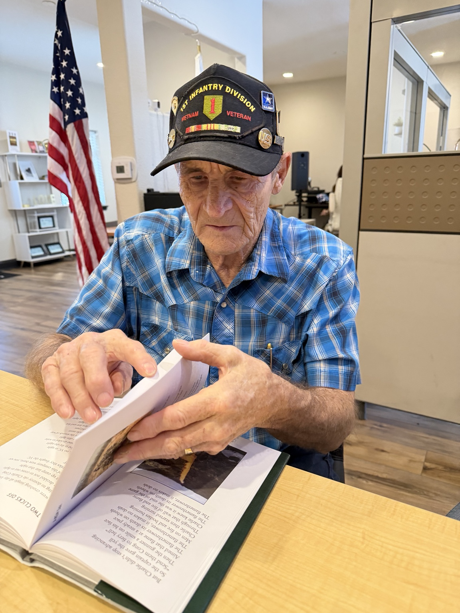
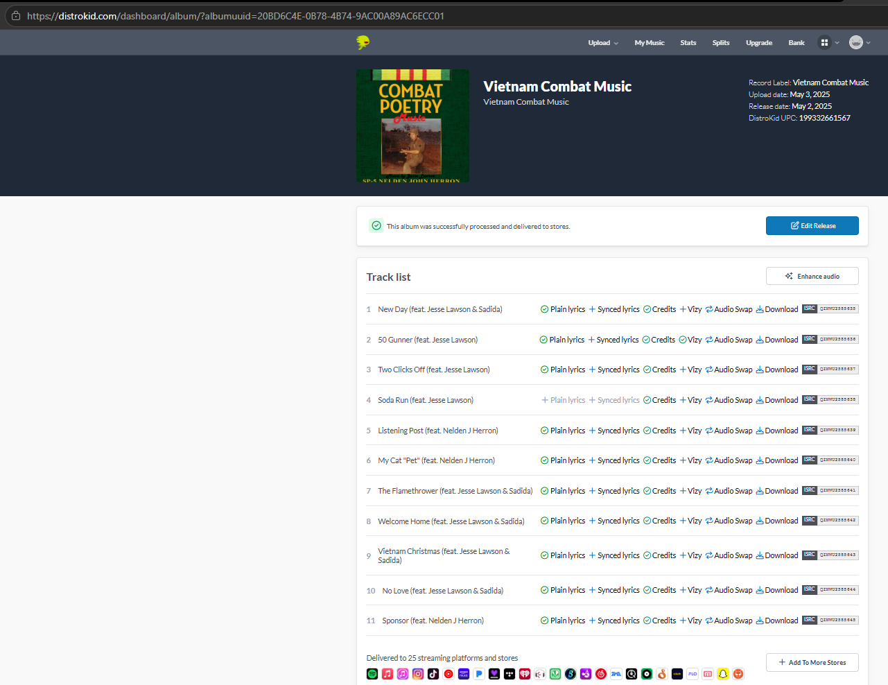
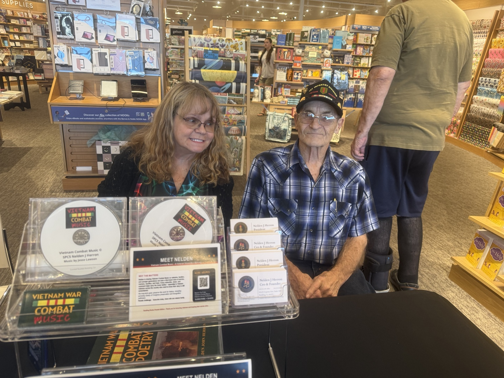
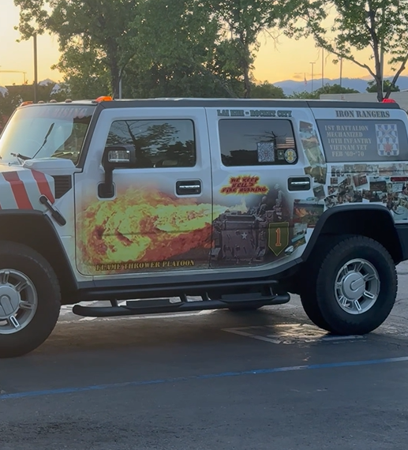
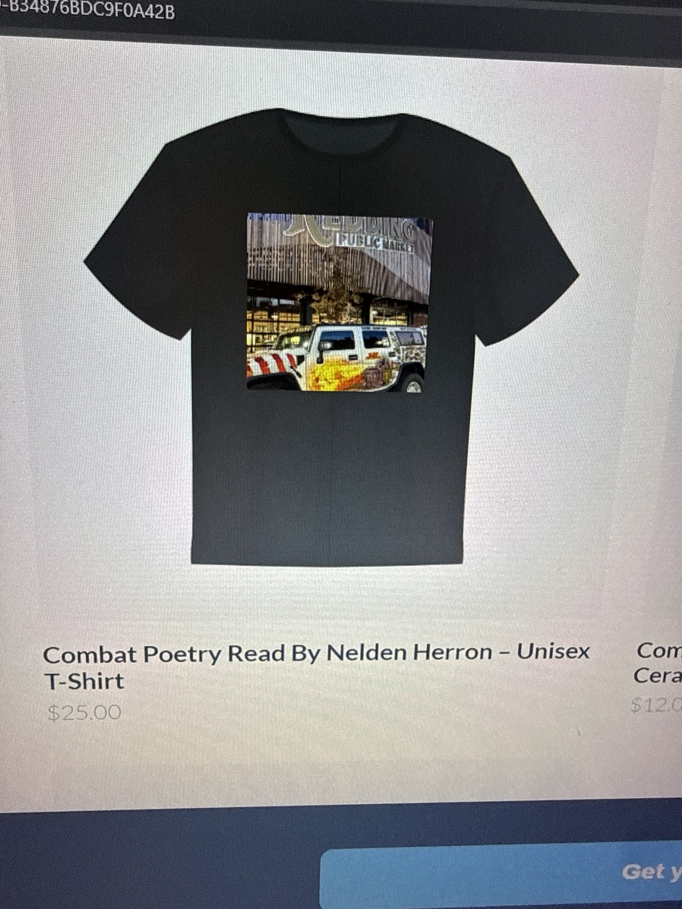
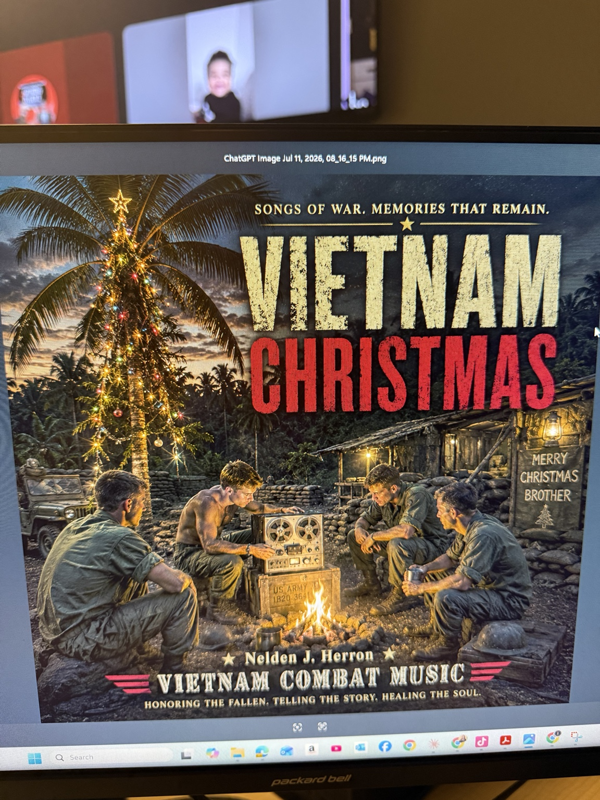

NH
Nelden J. Herron
Founding Veteran Poet & StorytellerA Vietnam combat veteran of the U.S. Army’s 1st Infantry Division, Nelden transforms firsthand memories and poetry into a living record for future generations.
Independent music · Living history
An independent record label built on the strength, endurance and uncompromising truth of Vietnam veterans—preserving lived history while helping original artists build work that lasts.

Our purpose
The roster
Original voices. Real stories. Work built to last.
A Vietnam combat veteran of the U.S. Army’s 1st Infantry Division, Nelden transforms firsthand memories and poetry into a living record for future generations.
The artist whose musical vision brought Nelden’s words to life through interpretation, performance, arrangement and production.
Explore Jesse’s full story →Rooted in R&B and gospel, Sadida brings soulful phrasing, emotional depth and a powerful contemporary voice to the Vietnam Combat Music catalog.
A Boston-rooted writer and producer working across pop, hip-hop and Latin music, Jennina brings cross-genre perspective, creative direction and an independent builder’s instinct to the label’s growing platform.
The complete affiliated artist and creative directory will expand with verified biographies, credits, music, video and photography.
Exclusive artist feature
Jesse Lawson’s creative contribution is the vital bridge between Nelden J. Herron’s firsthand Vietnam War poetry and the fully realized music heard today. Through musical interpretation, arrangement, performance and production, Jesse helped transform written testimony into an immersive body of work.
Vietnam Combat Music is committed to showcasing Jesse’s broader catalog, official credits, creative journey and selected works alongside this landmark collaboration.
Hear the collaboration ↗The catalog
Poetry marches to the beat of legacy.
FULL-LENGTH ALBUM · UPC 199332661567
Born from Nelden’s firsthand memories and poetry, this collaborative album preserves the fear, sacrifice, brotherhood and aftermath of war through song and spoken word.

OFFICIAL DISTRIBUTION
The album is distributed through DistroKid, with official credits and identifiers maintained for each track.
Audience figures reflect the supplied Vietnam Combat Music YouTube channel snapshot and will continue to grow.


Listen · Watch · Support

VIDEO & MUSIC

DISTROKID MERCH

FEATURED SONG
What we do
A mission-aligned home for artists and creators whose work carries truth and purpose.
Original music, spoken word and collaborative recordings built around authentic stories.
Music licensing, lending and limited-use loan arrangements for film, television, streaming, reality, documentary, education, exhibits and historically significant projects—including war films.
Connecting music with oral history, archives and intergenerational education.
Thoughtful presentation across streaming, video, physical media and live events.
Artist development and collaboration across recorded music, film, television, streaming, reality formats, documentary, visual art, education and public history.
Label journal
News, artists and living history.
A continuing series exploring Jesse’s creative process, wider body of work and defining role in Vietnam Combat Music.
Read the artist feature →Nelden’s written testimony is the foundation for a growing catalog of songs, spoken word and educational work.
Watch and listen →Follow the vision for events, exhibits and a Washington, D.C. awareness campaign centered on veteran voices.
Visit VVC →Legacy project testimonial
Jesse Lawson and Jennina Johansen took on what people said could not be done: transform difficult subjects and painful memories into music that could be heard, documented and remembered without losing the truth. Jesse built the musical bridge. Jennina protected the vision and carried the project forward. Together, they helped turn Nelden’s testimony into a living record—with honor, respect and love.Vietnam Combat Music Arts & History Corporation
“Honor, respect and love” are Nelden J. Herron’s words—and the standard behind every legacy project we accept.
From lived experience to public record
Vietnam Combat Music works at the intersection of recorded music, oral history, poetry and education. Our vision includes archival preservation, museum-quality storytelling, traveling educational exhibits and a national awareness journey culminating in Washington, D.C.
We intend to pursue appropriate pathways for presenting and preserving Nelden’s work in accordance with the collection policies of institutions such as the Library of Congress. No institutional endorsement is implied.
Veteran Voices Collective ↗Join the community
Join a growing community of veterans, artists, historians, educators and supporters committed to protecting creative legacy and helping important stories reach new audiences.